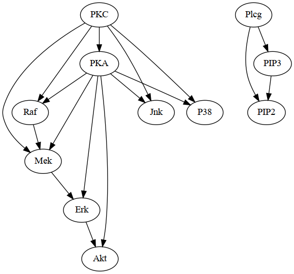
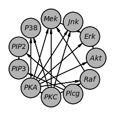
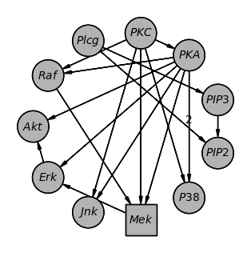

Plotting Models¶
pgmpy offers a few different ways to plot the model structure.
Using pygraphviz (https://pygraphviz.github.io/)
Using networkx.drawing module (https://networkx.org/documentation/stable/reference/drawing.html)
Using daft (https://docs.daft-pgm.org/)
1. Using pygraphviz¶
pygraphviz is a Python wrapper to Graphviz that has a lot for functionality for graph visualization. pgmpy provides a method to create a pygraphviz object from Bayesian Networks and DAGs that can then be plotted using graphviz.
# Get an example model
from pgmpy.utils import get_example_model
model = get_example_model("sachs")
# Convert model into pygraphviz object
model_graphviz = model.to_graphviz()
# Plot the model.
model_graphviz.draw("sachs.png", prog="dot")
# Other file formats can also be specified.
model_graphviz.draw("sachs.pdf", prog="dot")
model_graphviz.draw("sachs.svg", prog="dot")
The output sachs.png is shown below. Users can also tryout other layout methods supported by pygraphviz such as: neato, dot, twopi, circo, fdp, nop.
{kind=link}
2. Using daft¶
Daft is a python package that uses matplotlib to render high quality plots suitable for publications.
# Get an example model
from pgmpy.utils import get_example_model
model = get_example_model("sachs")
# Get a daft object.
model_daft = model.to_daft()
# To open the plot
model_daft.render()
# Save the plot
model_daft.savefig('sachs.png')
# Daft provides plenty of options for customization. Please refer DAG.to_daft documentation and daft's documentation.
model_daft_custom = model.to_daft(node_pos='shell',
pgm_params={'observed_style': 'shade', 'grid_unit': 3},
edge_params={('PKA', 'P38'): {'label': 2}},
node_params={'Mek': {'shape': 'rectangle'}})
The output of the two plots above.
 {kind=link}
{kind=link}
3. Using networkx.drawing¶
Lastly, as both pgmpy.models.BayesianNetwork and pgmpy.base.DAG inherit networkx.DiGraph, all of networkx’s drawing functionality can be directly used on both DAGs and Bayesian Networks.
import networkx as nx
import matplotlib.pyplot as plt
# Get an example model
from pgmpy.utils import get_example_model
model = get_example_model("sachs")
# Plot the model
nx.draw(model)
plt.draw()